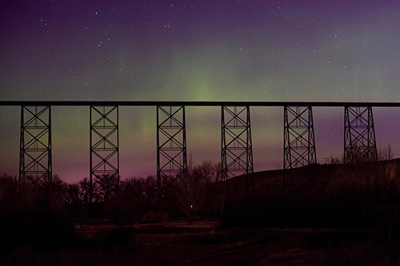

In Lethbridge you can Experience Japanese culture in Lethbridge. From the first spring blossom to autumn colors and bright winter lights in Japanese garden. When is winter we make sure visit once because the winter light is beautiful when visiting Lethbridge, it is one of the places you can visit, also, a beautiful location right next to Japanese gardens is Henderson Lake Park is beautiful park for walk or sit and enjoy the waterfront and this where we celebrate Canada day.
And another park is Indian battle park it is lovely picnic park for family there are lots of tables, there is also gorgeous viaduct, and the bridge amazing is a nice spot to take pictures for the bridge. I would highly recommend visiting this place. When visiting Lethbridge people should go to Waterton Lake Nation Park it is not overtaking by the tourism and it is great place for camping and doing hiking.